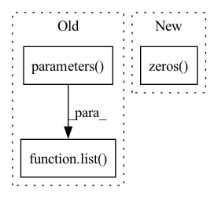

Pattern ID :28413
Before Change
w_params = []
for mw in self.client_ws:
w_params.append(list( mw.parameters()) )
w_params = list(zip(*w_params))
for i, mu in enumerate(self.client_us):After Change
for param in mu.parameters():
param.data = torch.zeros_like(param.data)
coef = torch.zeros( self.num_clients)
for j, mw in enumerate(self.client_ws):
if i != j:
sub = (weights[i] - weights[j]).view(-1)
sub = torch.dot(sub, sub)In pattern: SUPERPATTERN
Frequency: 4
Non-data size: 3
Instances Fragment ID: 83792318
Project Name: tsingz0/pfl-non-iid
Commit Name: 9f3dd6c4ac5b7e8a15d07ef015eb8fd4f90beab3
Time: 2021-08-29
Author: 2719584131@qq.com
File Name: system/flcore/servers/serveramp.py
M Class Name: FedAMP
N Class Name: FedAMP
M Method Name: update_client_temp(1)
N Method Name: update_client_temp(1)
M Parent Class: Server
N Parent Class: Server
M File Name: system/flcore/servers/serveramp.py
N File Name: system/flcore/servers/serveramp.py
M Start Line: 92
M End Line: 111
N Start Line: 91
N End Line: 107
Before Change
w_params = []
for mw in self.client_ws:
w_params.append(list( mw.parameters()) )
w_params = list(zip(*w_params))
for i, mu in enumerate(self.client_us):After Change
sumE += self.e(weights[i], mw)
sumE -= self.e(weights[i], weights[i])
coef = torch.zeros( self.num_clients)
for j, mw in enumerate(self.client_ws):
if i != j:
coef[j] = (1 - self.xi) * self.e(weights[i], weights[j]) / sumE
coef[i] = self.xi Fragment ID: 83792319
Project Name: tsingz0/pfl-non-iid
Commit Name: 9f3dd6c4ac5b7e8a15d07ef015eb8fd4f90beab3
Time: 2021-08-29
Author: 2719584131@qq.com
File Name: system/flcore/servers/serverhamp.py
M Class Name: HeurFedAMP
N Class Name: HeurFedAMP
M Method Name: update_client_temp(1)
N Method Name: update_client_temp(1)
M Parent Class: Server
N Parent Class: Server
M File Name: system/flcore/servers/serverhamp.py
N File Name: system/flcore/servers/serverhamp.py
M Start Line: 95
M End Line: 115
N Start Line: 94
N End Line: 113
Before Change
except:
fs = ""
print("Model Summary: %g layers, %g parameters, %g gradients%s" % (len(list( model.parameters()) ), n_p, n_g, fs))
def load_classifier(name="resnet101", n=2):After Change
from thop import profile
stride = max(int(model.stride.max()), 32) if hasattr(
model, "stride") else 32
img = torch.zeros( (1, model.yaml.get("ch", 3), stride, stride), device=next(
model.parameters()).device) // input
flops = profile(deepcopy(model), inputs=(img,), verbose=False)[
0] / 1E9 * 2 // stride GFLOPs
img_size = img_size if isinstance(img_size, list) else [ Fragment ID: 83792316
Project Name: lannguyen0910/food-detection-yolov5
Commit Name: b5735ec3f41b2fda4cb3de7a336b0a90cfdab34a
Time: 2022-01-31
Author: 18120051@student.hcmus.edu.vn
File Name: models/utils/torch_utils.py
M Class Name: AnonimousClass
N Class Name: AnonimousClass
M Method Name: model_info(3)
N Method Name: model_info(2)
M Parent Class:
N Parent Class:
M File Name: models/utils/torch_utils.py
N File Name: models/utils/torch_utils.py
M Start Line: 129
M End Line: 145
N Start Line: 135
N End Line: 158